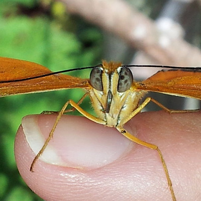

Butterfly
Butterfly eggs are protected by a hard-ridged outer layer of shell, called the chorion. This is lined with a thin coating of wax which prevents the egg from drying out before the larva has had time to fully develop. shaped openings at one end, called micropyles; the purpose of these holes is to allow sperm to enter and fertilize the egg. Butterfly and moth eggs vary greatly in size between species, but they are all either spherical or ovate.[citation needed]Butterfly eggs are fixed to a leaf with a special glue which hardens rapidly. As it hardens it contracts, deforming the shape of the egg. This glue is easily seen surrounding the base of every egg forming a meniscus. The nature of the glue is unknown and is a suitable subject for research. The same glue is produced by a pupa to secure the setae of the cremaster. This glue is so hard that the silk pad, to which the setae are glued, cannot be separated.[citation needed.